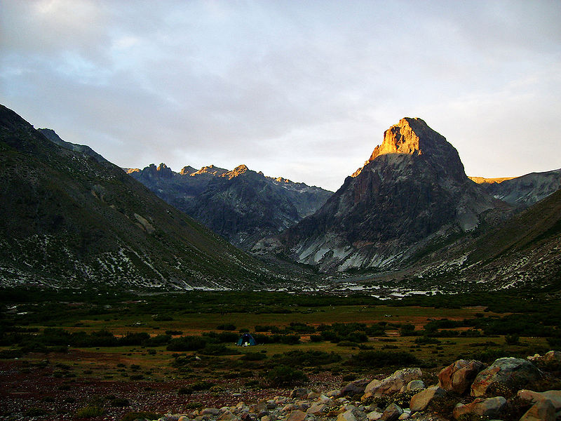
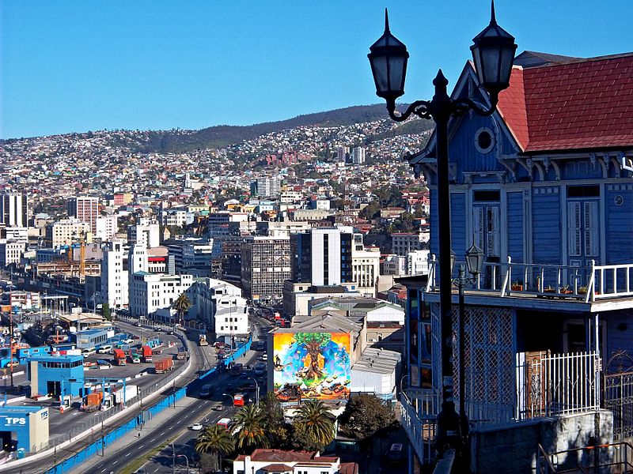

Ontdek—Chili!
 Chili (Spaans: Chile), officieel de Republiek Chili (Spaans: República de Chile) is een land in Zuid-Amerika, buurlanden: Peru, Bolivia en Argentinië. Het ligt ingeklemd tussen de Grote Oceaan en de Andes. De hoofdstad is Santiago, het parlement zetelt in Valparaíso. Het land maakt ook aanspraak op een stuk van Antarctica (ditzelfde stuk wordt ook grotendeels door Argentinië opgeëist). Om deze reden staat de obelisk die het officiële geografische middelpunt van Chili markeert ook in het zuiden, bij de stad Punta Arenas, vlak bij Vuurland. De Juan Fernández-archipel, Desventuradaseilanden, Sala y Gómez en Paaseiland, dat zeer ver ten westen van het vasteland ligt, horen ook bij Chili. (wikipedia)
| Rankschikking | Naam | Regio | Bevolking | |
|---|---|---|---|---|
| 1. | Santiago Metropolis | Santiago Metropolitan Region | 5,428,590 | |
|  | 2. | Greater Valparaiso | Valparaiso Region | 803,683 |
| 3. | Greater Concepcion | Biobio Region | 666,381 |
Santiago—Geniet van het uitzicht over Santiago vanaf Cerro San Cristobal
Als de smog geen roet in het eten gooit, dan heb je vanaf deze berg aan de voet van de witte Christus een geweldig uitzicht over de stad en de Andes. Zowel overdag als ’s avonds is het de moeite waard. Je kunt de berg in een paar uur oplopen of vanuit de wijk Bellavista de kabelbaan naar boven nemen. (rugzakvolreizen.nl)
Valparaiso—Verdwaal door slingerende straatjes
Zoek net voor de avond valt een leuk terras uit op een van de heuvels. Een terras met uitzicht over de zee. Zo gauw het donker wordt, komt er een magisch licht over de stad. Op alle heuvels branden er lampen. De flikkerende lichten zijn een adembenemend schouwspel! (zuidamerika-expert.nl)
...